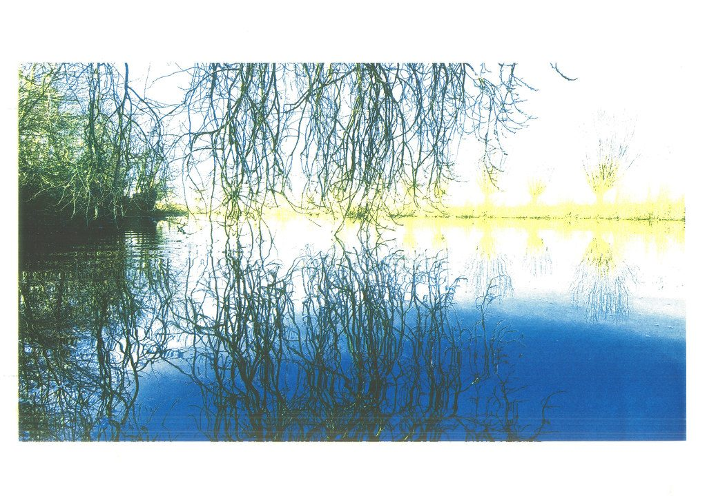

References / Illustration / 479
Jan-Willem Doornenbal, Riso Fort Zuid Wilgen
A scan of an A3 three-color riso print of willows reflected in water, in blue, yellow, and black.
- Source
- Flickr: Jan-Willem Doornenbal, “Riso Fort Zuid Wilgen”
- Creator
- Jan-Willem Doornenbal
- Made
- 2025 (scanned 7 February 2025)
- Style
- Risograph (agent-proposed, not yet reviewed by a person)
- Moods
- Calm, grainy, natural
- Evidence
- Viewed the 1024 × 726 px Flickr “large” file, a flatbed scan of the whole sheet, so the color is closer to the print than in a photograph.
- Reviewed
- Rights
- Open license, stored. License: CC-BY-2.0. Rights policy
Context
The Flickr description says: “Scan van een 3-kleuren risoprint op A3-formaat. Blauw, geel en zwart.” (Scan of a three-color riso print in A3 format. Blue, yellow, and black.)
Observed
- The photograph is split into three inks: a mid blue for water, a pale yellow for the far bank, and black for branches.
- Blue and yellow overlap into green in the trees at the left.
- Large blue areas show fine horizontal banding and grain near the lower edge.
- The image is printed with a wide white paper margin.
Why it belongs
Riso separations do not reproduce full color. They turn a photograph into a few flat, translucent layers.
Borrow
Split an image into two or three ink layers with hard thresholds instead of a smooth full-color photo.
Measured
Machine-extracted by tools/image-traits.py on . Full measurement.
- Mean chroma
- 0.12
- Palette
- #ffffff 40%
- #f1f7f7 7%
- #2363aa 5%
- #3d4a41 4%
- #435a4e 3%
- #375968 3%
- #2f72b2 3%
- #306089 3%

